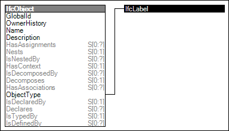

Link to this page
Link to this pageMany object occurrence and object type entities have an attribute named PredefinedType consisting of a specific enumeration. Such predefined type essentially provides another level of inheritance to further differentiate objects without the need for additional entities. Predefined types are not just informational; various rules apply such as applicable property sets, part composition, and distribution ports. If the object is typed by an IfcTypeObject, then the PredefinedType at the IfcObject occurrence shall only be used if the PredefinedType at IfcTypeObject is set to NOTDEFINED.
If a custom value is needed, the attribute ObjectType may be used to define such custom type, where the PredefinedType is set to USERDEFINED.
Figure 15 illustrates an instance diagram.
 |
Figure 15 — Object Occurrence Predefined Type |